Los Nuevos Medios y la Colección de Grabado
Agosto 10th, 2007
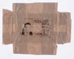 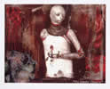 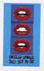 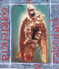


La gráfica artística contemporánea ha alcanzado notables niveles de desarrollo, permitiendo un proceso de autonomía y consolidación, pero con una orientación encaminada a la búsqueda de conceptos bien definidos: el desarrollo de la capacidad creadora de los artistas y la gran renovación del lenguaje a partir del conocimiento de los medios de expresión.
Por supuesto que estas afirmaciones no son exclusivas de los artistas gráficos, pero sí definen la doble faceta aludida: el dominio técnico al servicio de la creación. El grabado, como una de las formas mas relevantes de la gráfica de arte, ha alcanzado notables niveles de desarrollo; la proliferación de talleres independientes, escuelas de arte, editoriales, ferias, premios y convocatorias en todo el mundo así lo corroboran. Osaka y kochi (Japón) Seul (Korea) Biella (Italia) varios premios en España y en nuestro continente Cuba, Puerto Rico y Argentina, se han destacado internacionalmente a través de convocatorias abiertas a los artistas de todo el mundo, que han convertido esta modalidad en una actividad esencial de su proceso creativo, impulsados no solo por la creciente demanda, capaz de superar la pretendida crisis del mercado, sino por la capacidad de ofrecer lenguajes innovadores e interesantes opciones de experimentación. (1)
Estas interesantes características han influido en las curadurías de muchísimos certámenes de gráfica, en el sentido de considerar en la selección aquella obras que expresan el mas refinado y exquisito gusto por la ejecución de sus ediciones tanto en los medios considerados como tradicionales, vale decir xilografía, grabado en metal, litografía serigrafía, etc. como la búsqueda de nuevas formas de creación, actividades colectivas, materiales alternativos y tecnología de vanguardia, como la utilización del offset, la fotografía, la xeros y de mas reciente invención, la impresión digital, con todos los recursos y procesos de la informática a través del computador. La Colección de Grabado de la Facultad de Artes no ha sido ajena a estos procesos de transformación, debido a varios factores entre los que se pueden destacar, la dotación del Taller de Grabado de la dependencia, la puesta en marcha del Centro de Recursos de Creación Informática de la Facultad (CRECI), la inserción en los planes de estudio de talleres complementarios en estas áreas, que permiten mayor flexibilidad y opciones, y el ingreso de docentes capacitados. Pero sobre todo, al sistema de donación de obras mediante selección, que ha permitido en primer lugar tener un cuerpo físico de grabados originales desde la fecha de su fundación en 1991, en todos los procesos de la impresión artística, incluyendo los mas actuales. Gracias a este método, periódicamente se reciben nuevas obras, que permiten un proceso de constante renovación de la muestra. Solo la gráfica permite estas acciones, pues al ser obras impresas de carácter múltiple, sus autores, no solo estudiantes sino egresados, docentes y artistas independientes, han donado un ejemplar de sus ediciones, que se utilizan en exposiciones, intercambios y publicaciones, principalmente. En todo caso se debe aclarar que si bien es reducido el número de obras procesadas en estos nuevos medios, con dicho material se pueden relacionar tres períodos en el tiempo archivados en la Colección y que evidencian este fenómeno.
El primero, reseña la producción de obras impresas digitalmente en el año 2000. Se trata de trabajos que obedecen a un mismo factor común: en la mayoría de los casos (ID.02-1032 a 02-1041) se valen de una iconografía ya existente como fotografías de revistas, archivos digitales y obras de artistas reconocidos, que al ser manipuladas mediante procesos digitalizados, presentan obras donde la imagen no es única e independiente. Se trata de grafismos a modo de montajes, donde los primeros planos (close-up), la fragmentación de la imagen y el color, constituyen los elementos visuales mas importantes y de algún modo, emparentados con la gráfica pop de los artistas norteamericanos de los años ’60.
El segundo grupo, reseña obras procesadas en el CRECI en el año 2005 (ID. 05-1188 a ID.05-1200) momento en que ya se puede hablar de la consolidación de talleres complementarios en varios niveles, y que se articulan de modo flexible con los restantes cursos y programas académicos que ofrece el Depto. de Artes Visuales.

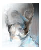
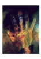


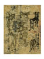

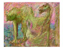


Se produce entonces una tipología de obras que obedecen a exploraciones cromáticas de gran intensidad y en muchísimas tonalidades, donde el manejo de las herramientas electrónicas es muy autónomo a favor de interesantes propuestas con propósitos de acercamiento mas que tangencial con los fenómenos de la óptica y el color. Haciendo un análisis comparativo de los dos momentos descritos, saltan a la vista diferencias esenciales en cuanto a los conceptos que han motivado esta producción. Si en las primeras obras prima un trabajo mas orientado hacia la gráfica, vale decir acudiendo a planos extensos de color, exploración lineal a modo de grafismos, ritmos por repetición de imágenes, montajes, primeros planos y fragmentaciones, en el segundo grupo, como ya lo expresé anteriormente, hay una rica experimentación mas afín con las cualidades y el lenguaje del color y la pintura.
El tercer momento obedece a intentos esporádicos de estudiantes, egresados y artistas independientes. Cristina Cardona (ID. 02-1048) Harold Miranda (serie de cuatro grabados ID. 00-0825) Tulio Restrepo (serie de cuatro obras ID.00-0817)y Ana Cristina Zuleta (serie de cuatro obras (ID.00-0824), que han orientado su producción hacia obras en medios mixtos, donde prevalece la gráfica tradicional junto a procesos alternativos como el transfer, frottage, intervención de xeroscopias, uso de la fotografía, matrices no convencionales, impresiónes en yeso, etc. que incorporadas a procesos digitalizados, han logrado resultados muy interesantes.
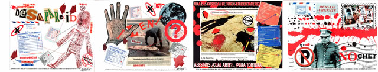
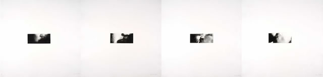
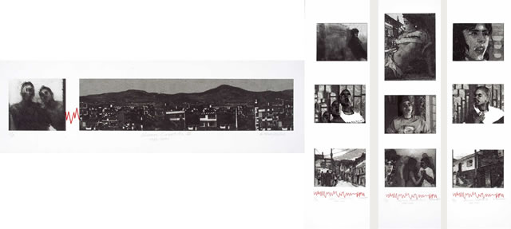
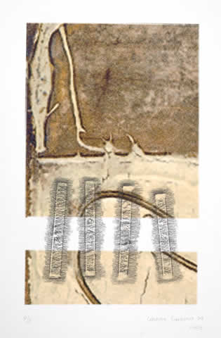
(1)
En
este punto se deben establecer notables diferencias entre la producción
de las grandes empresas de la industria editorial, cuyas ediciones
alcanzan cifras que superan varios centenares de miles de ejemplares,
con la producción de bajos tirajes realizados en muchos casos en
talleres de artistas e impresores gráficos, escuelas de formación
artística, talleres independientes etc. donde el sistema de producción,
auque hoy en día con importantes innovaciones, no dejan de ser tareas y
espacios donde artistas e impresores de común acuerdo, deciden la
realización de sus ediciones. Casi
todas las operaciones productivas, tanto conceptuales como operativas
se realizan allí mediante procesos manuales en la mayoría de los casos,
como la preparación del papel, la intervención de las matrices, el
ajuste de prensas, la preparación de pigmentos etc. es decir es un
trabajo colectivo que implica el aporte de todos. En las grandes
editoriales se controla electrónicamente casi todo el proceso y cada
operario realiza sus funciones, sin participar en otras operaciones del
proceso. En este punto del análisis se podría hablar entonces de la Gráfica
de Arte, que aunque nació en el siglo XV con fines reproductivos para
copiar las pinturas de los grandes maestros del Renacimiento en Italia
y otros países, y para ilustrar la ideología religiosa dominante en la
época, logró su autonomía después de varios siglos de reinado. Solo a
partir de los expresionistas germanos en occidente, y gracias al
descubrimiento de la fotografía, el arte se hizo autónomo; se rompió
con la tradición y los artistas se dedicaron a crear obras, no a
reproducir pinturas; pero dicha creación obedecía por igual a su
reproducción con el fin de reducir costos y acercarla a mayor número de
personas. Esta
acción muy significativa y audaz por cuanto encarna el
resquebrajamiento de esquemas, no deja sin lugar a dudas de ser una
paradoja en el mudo contemporáneo, porque a pesar de ser inherente al
grabado la reproducción por medio de la matriz para permitir su
multiplicación, sus ediciones no tienen nada que ver por ejemplo, con
las enormes tiradas de periódicos o afiches impresos para el consumo
masivo de hoy. Paralelamente, la serialidad de una obra
artística, no deja de ser una obra autógrafa, original y de gran valor,
por sus características tanto en la producción como en la edición. Aunque
Warhol produjo grandes ediciones de retratos de famosos artistas de
cine, cantantes y figuras de la política, no llegaron nunca a tener el
consumo super masivo de un poster con la chica desnuda en una Harley
Davidson y con una serpiente enrollada a su cuello. Una grabado de Antoni Tàpies es considerado como un ejemplar de gran originalidad.Para
empezar, la fabricación del papel, de bordes irregulares y en altos
gramajes para soportar las heridas e incisiones, sometido a procesos
de control de humedad para permanecer intacto durante muchos años, las
cualidades matéricas y de textura de una riqueza visual y táctil
exquisita por sus empastes de pigmento, son cualidades que le confieren
a estas obras, gran originalidad Ernest
Pignon, sin renunciar a la ejecución manual de la imagen, se enfrenta
al espacio urbano interpelando con su presencia los contenidos de
amplios sectores sociales que lo habitan. Se trata de imágenes pegadas
sobre los muros de París y otras ciudades francesas. Sus serigrafías de
gran tamaño en blanco y negro cobran su real dimensión al aparecer “dos
mil cadáveres” pegados en las escalinatas del Sacre Coeur, conmemorando
los cien años de la matanza de la Comuna.
Hernando Guerrero
Docente Facultad de Artes
Investigador principal
Grupo MIRA
Universidad de Antioquia